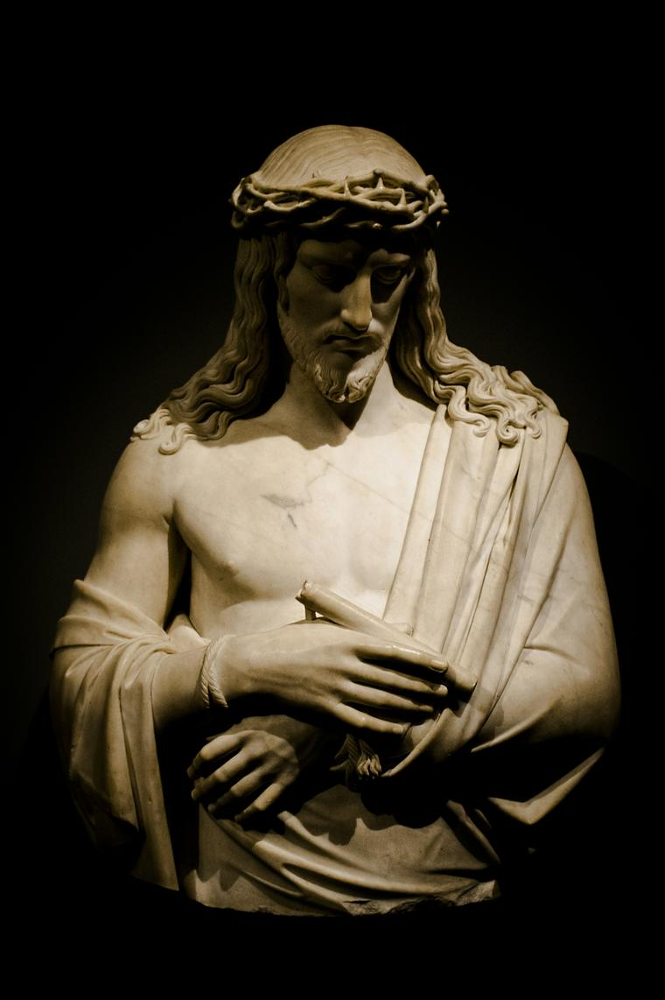
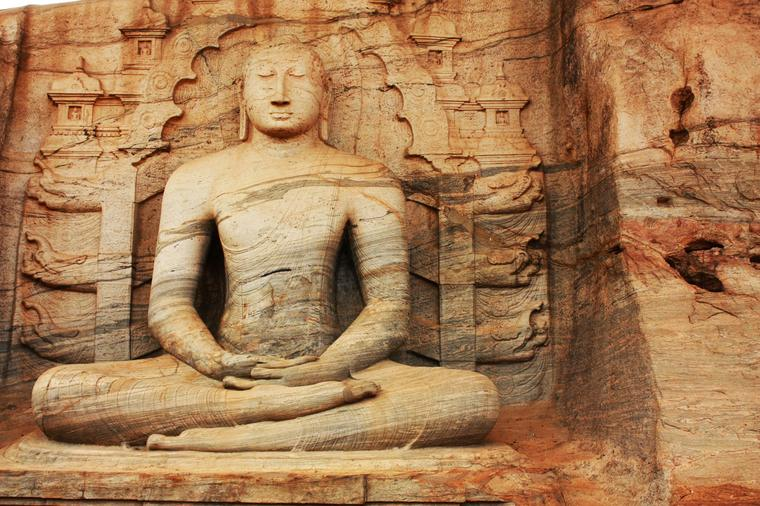
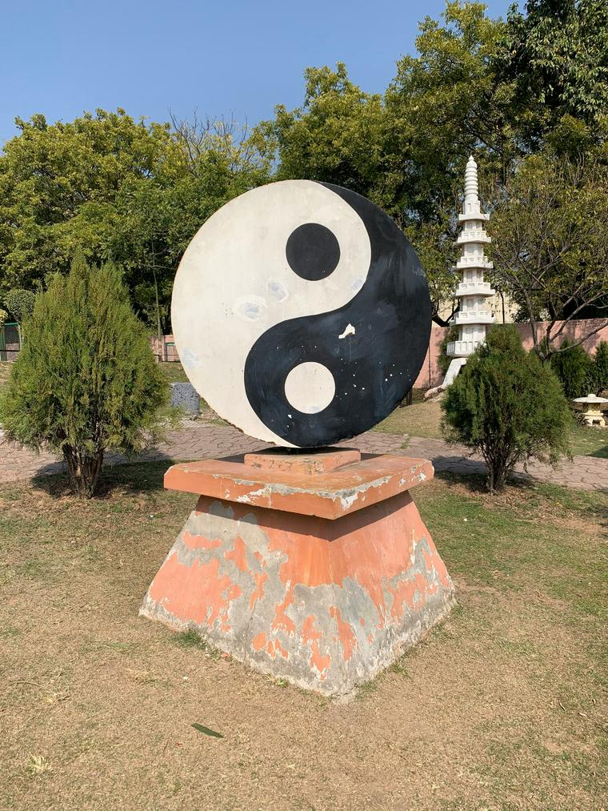

Learn about World Religions!
Welcome to the World Religions Service Project website! Our mission is to foster understanding, respect, and appreciation for the diverse religious traditions that shape our world. In today's global society, it is more important than ever to recognize and embrace the rich tapestry of beliefs and practices that contribute to our collective human experience.
The World's Religions

Christianity, based on Jesus Christ's life and teachings, emphasizes faith in God, love, salvation, and eternal life. Key scriptures include the Bible's Old and New Testaments.
Islam, founded by Prophet Muhammad, follows the Quran. Core practices include the Five Pillars: faith, prayer, charity, fasting, and pilgrimage, emphasizing submission to God's will.
Confucianism, founded by Confucius, is an ethical system focusing on moral integrity, social harmony, and education. Key principles include Ren (benevolence), Li (ritual propriety), and Xiao (filial piety).
Hinduism, a diverse, ancient religion, focuses on Dharma, Karma, Samsara, and Moksha. Key texts include the Vedas and Bhagavad Gita, highlighting spiritual knowledge and ethical living.

Buddhism, founded by Siddhartha Gautama, emphasizes the Four Noble Truths and the Eightfold Path to end suffering and attain Nirvana. Core practices include meditation and ethical conduct.
Judaism, a monotheistic faith, centers on the Torah and God's covenant with Abraham. It emphasizes justice, community, and holiness through following God's commandments and rituals.

Taoism, from ancient China, centers on living harmoniously with the Tao (The Way). Principles include Wu Wei (effortless action), simplicity, and spiritual growth through meditation.
By Odin's beard, you shall not cut my hair, lest you feel the wrath of the mighty Thor! Please! Please kind sir, do not cut my hair! No! Nooo!
Call to action!
This is an open-source website. Feel free to contribute to the project on GitHub!